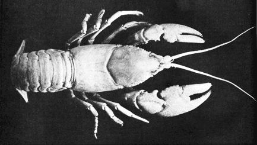

My twelve-year-old Girl Scout granddaughter came bursting into the room, bubbling with excitement. "Grampa! Grampa!" she squealed. "I ate a live crawdad and earned my merit badge."
"Doesn't sound very appetizing to me," I protested.
"Not bad with plenty of salt," insisted Jeanie. "Of course, if you have a fire you can boil them and they turn red and then their tails taste just like shrimp. But if you're desperate and starving you can eat them raw and they have lots of protein and can save your life. That's how I got my survival merit badge."
"Well, I'm sure glad you survived," I said, sending her along with an encouraging pat on the fanny.
Jeanie was right: Crawfish are great survival food . . . partly because you can find them almost everywhere. They're one of the most widely distributed crustaceans and thrive on every continent except Africa. Of the more than 300 known species, no less than 100 have been identified in the United States (where they're variously known as crayfish, crawdads, mudbugs, mini-lobsters, stonecrabs, etc.).
The critters-whatever you call them-look like very small lobsters. Each one is equipped with two claws in front, six or eight slender legs which permit it to walk around on the bottom and a flattened, broad tail which can be used as an emergency oar to send the mudbug shooting backward through the water as if jet-propelled.
Nature made crawfish very prolific . . . a wise provision since they have a host of enemies. They're the principal food of the river otter and are eagerly sought by mink, raccoons, possums and other animals. Even dogs and house cats have been known to catch and eat crawdads. Water birds-gulls, herons, ibis, cranes and storks-feed on the tasty morsels and are adept at catching them in shallow water. Bullfrogs, catfish, bass and other game fish seek them too, and bait shops at many fishing resorts sell stonecrabs in quantity.
Hungry humans are also keen hunters of crawfish . . . which are easily captured, without bait or elaborate paraphernalia. In shallow, running water you can catch the little critters by overturning rocks in the streambed and snatching your prey as they try to escape. (Scare the creatures with a stick brandished in front of them, and they'll dart backwurd. . . straight into a waiting hand or tin can.-MOTHER.)
The mature crawfish also lives beside still waters and in swampy areas, where it protects itself during dry seasons by digging a burrow deep enough to hold water at the bottom. (These holes are the birthplaces of the young.) Such a hideaway is usually marked by a mud castle around the opening and is often large enough that one can reach down with hand and forearm to grab the occupant. If not, he can usually be teased or forced out with a small stick. Caution: a mudbug's front claws-like those of the lobster-have considerable leverage and can give you a pinch which, although not severe enough to draw blood, may be quite sharp and painful.
I well remember catching crawdads in their mud-ringed holes along creek banks and marshy meadows when I was Jeanie's age. My friends and I weren't worried enough about survival to eat them raw . . . but-like all small boys-we were always hungry, and boiled crawfish tails tasted mighty good.
Sometimes, too, I went with black chums and their families on mass picnic expeditions to the Missouri river bottoms. On those festive occasions, a very special technique was used to catch the yearling crawfish in quantity. A chunk of pork liver was tied to a stout cord fastened to a length of bamboo pole. The bait was then tossed into quiet water in the swampy bayous, away from the swift currents of the river, and allowed to rest on the bottom for ten or fifteen minutes. When it was slowly raised to the surface, it would be covered with tightly clinging crawdads! The creatures would release their hold as they were lifted from the water and drop-a dozen or two at each haul-into a sort of butterfly net of cheesecloth or mosquito bar carefully positioned beneath.
In no time at all we would have a twelve-quart pail of the squirming, wriggling three-inch crustaceans. Then the women of the party-who already had a bonfire burning and a large kettle of salted water boiling furiously-would take over. The crawfish were dumped into the bubbling liquid, and almost instantly changed color from the dull green of living creatures to the bright red of tasty cooked tidbits.
We'd shell out the snow-white, steaming hot morsels like peanuts, sprinkle them lightly with salt and pop them into our mouths . . . and I'm amazed even now to think of the quantities we ate! I suppose, looking back on it, that our feasts were rather wasteful since we devoured only the tails and discarded the rest for birds, raccoons and other scavengers.
By the way, you don't need access to a stream, river or swamp to enjoy a mess of crawdads now and then. The duck ponds and lily pools in municipal parks often contain large populations of the crustaceans and-if you live near such a source-you might perhaps get permission to remove some of the surplus. Denver's City Park has a pond that swarms with the beasties. When I lived there, we often went down with a bit of bait on a string and snagged a two-quart milk carton full: two or three dozen three-inch crawfish . . . enough for a gourmet dish of bisque, etouffee, stew, pie, soup or whatever. Personally, I like my mudbugs plain, piping hot, sprinkled with salt and drenched with a bit of melted lemon butter. Mmmmm!
Still, for the benefit of the ultrafastidious, I'll give a master chef's directions for preparing and cooking mini-lobsters: "Wash the crawfish well in several changes of salted water. Drop them one by one into a rapidly boiling pot. You may add salt, a few grains of cayenne and two teaspoons of caraway seed. The addition of minced vegetables to the stock at this time makes a very good soup.
"Boil the creatures for five minutes and leave them in the water until cool. Pull out the middle tail fin and the intestinal vein along with it. Shell the crawfish, set them aside and boil the vegetables until tender. Reheat the crustaceans and serve them with lemon and drawn butter after the soup course."
With so many tasty ways available to prepare the catch, it's no wonder that crawfishing has always been a favorite seasonal sport in many Southern States . . . principally Louisiana, where the shallow bayous and swampy areas have proved favorable to the crawdads' development.
By a happy coincidence, the crustaceans' ideal habitat-a pond or swamp that dries up (or can be drained) during part of the year-is also just right for the growing of rice. It's been found recently that crawfish can be raised as a rotation crop in rice fields, and their farming promises to become an important agricultural industry.
I'll admit that-outside Louisiana, the home of this booming business-crawfish farming is little known. Mudbugs are found in most of the other states, however, and there seems to be no reason why they can't be grown in quantity in regions other than the extreme South. In fact, homesteaders who have farm ponds, ditches or swampy areas on their land may find it worthwhile to give this crop a try.
No special technique is required to grow crawfish. Just stock the water with mature crustaceans, at the rate of about 25 pounds to the acre, and let nature take its course. Each female produces from 100 to 600 eggs which she carries beneath her tail until they hatch. The pond or waterway should contain plenty of organic matter-cattails, bulrushes and other water weeds-to provide food for the young, which grow rapidly on a diet of decaying vegetation.
Once the body of water is stocked, no attention is necessary other than to protect your crawdads from predators: birds, raccoons, bullfrogs and fish. Judicious trapping or shooting should keep these marauders in check and permit a mudbug population explosion.
Some farmers in Louisiana report production records of up to 1,000 pounds per acre. That's a lot of delicious, highprotein eating (and maybe some handy cash, too) with very little work on your part. Any way you look at him-as a survival ration, gourmet dish or money crop-the versatile mini-lobster is a useful fellow to know.
|
 |
|
|